Bodde under början av mitt liv på Palmgatan i Tierp, därefter bodde vår familj under några år i det då nya området vid Mattiasgatan. Efter detta flyttade vår familj till en nybyggd villa på Löväsvägen 9…..allt i Tierp.
Mina egna boenden genom åren har varit:
Ankarströms väg i Söderfors (Jörsön)
Styrmansgatan 8 i Gävle (Brynäs)
Heimdals väg 20 i Norsborg
Igeldammsgatan 20 i Stockholm (Kungsholmen)
Mauritz Stillers väg 4 i Solna (Gamla Filmstaden i Råsunda)
Viktor Sjöströms väg 4 i Solna (Gamla Filmstaden i Råsunda)
Treuddsvägen 20 i Vaxholm (Oskar-Fredriksborg på Rindö fd KA 1)
Fritidshus:

Dammstugan, Ursbo, Film (före detta fritidshuset). Foto: Ronny Fredriksson
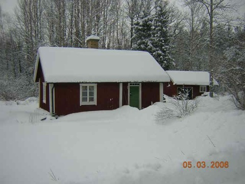
Dammstugan, Ursbo en ganska snörik mars månad. Foto: Ronny Fredriksson
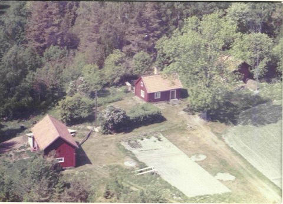
Gammal flygbild på Sjudars.
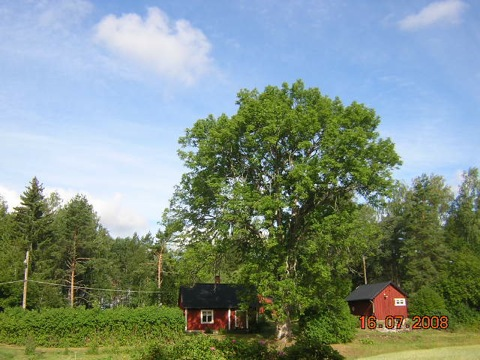
Gamla Sjudarstorpet (fd fritidshus) med den stora asken samt källarboden. Foto: Ronny Fredriksson
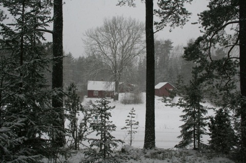
Sjudars (fd fritidshus) en gråmurrig vinterdag. Foto: Ronny Fredriksson
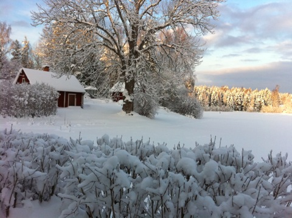
Sjudars (fd fritidshus) en lite vackrare vinterdag. Foto: Ronny Fredriksson
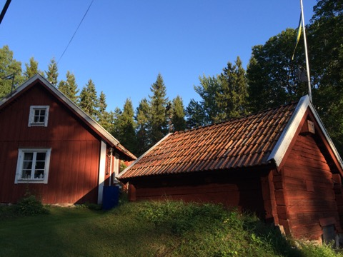
Hagels Boda sommaren 2014. Foto: Ronny Fredriksson
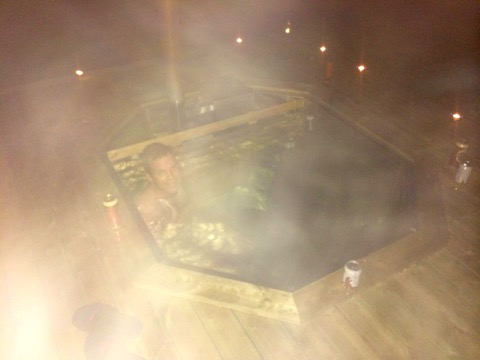
Ångigt vid badtunnan vid Hagels Boda hösten 2014. Foto: Ronny Fredriksson
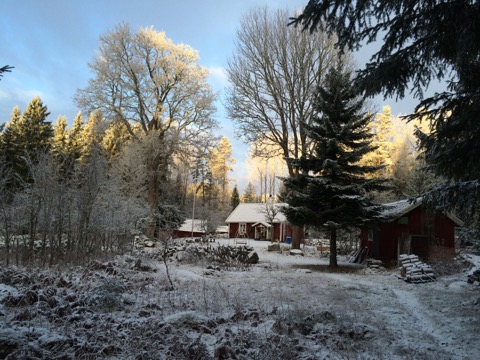
Mysigt vid Hagels Boda. Foto: Ronny Fredriksson
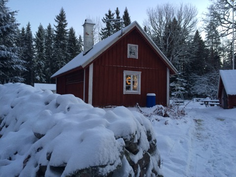
Hagels Boda på Juldagen 2014. Foto: Ronny Fredriksson
Gillar och är nyfiken på människor. Blir illa berörd av att se människor som inte har förmågan att försvara sig bli dåligt behandlade. Har svårt för strebrar och besserwisser personer. Gillar orden klokskap, ödmjukhet och harmoni.
Mänskliga förebilder….med deras styrkor och svagheter…..Nelson Mandela, Dalai Lama, Tage Erlander, Bengt Göransson, min lärare på Aspenskolan i geografi samhällskunskap historia Nils-Åke Nilsson från Uppsala, Lars Gotborn som när det begav sig var ordförande i Nordupplands Ornitologiska Förening (NUOF), morfar Åke, mamma Britt-Marie, farmor Märta, Olof Palme…..ja listan kan göras längre…..
Jag arbetar på ett av Sveriges större säkerhetsföretag på HR avdelningen, har bla varit HR-chef under 8 år och är nu förhandlings- och informationschef. Ett intressant och roligt arbete men som tar för mycket tid av mitt liv. Genom mitt arbete har jag haft och har en del tilläggsuppdrag såsom suppleant i bolagsstyrelsen för Säkerhetsgymnasiet i Stockholm AB, styrelseledamot i Loomis Sverige AB, suppleant i Bevakningsbranschens Yrkes- och Arbetsmiljönämnds styrelse, ledamot i BYA/Väktarskolans styrgrupp, ledamot i BYAs styrgrupp för arbetsmiljöfrågor, ordinarie ledamot i arbetsgivareorganisationen ALMEGA Säkerhetsföretagens styrelse etc...
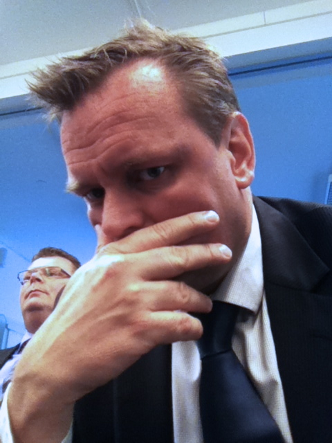
En något fundersam Ronny Fredriksson samban med avslut på en chefsutbildning på Securitas.
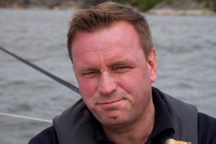
Undertecknad vid segling med tävlingsbåten Feelgood 2012.
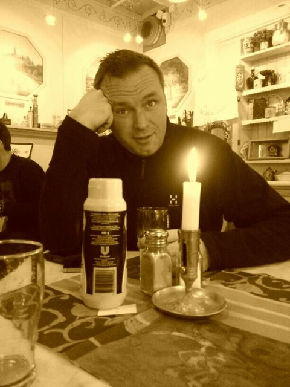
För ganska många år sedan var jag tillsynsman åt Länsstyrelsen i Florarna.
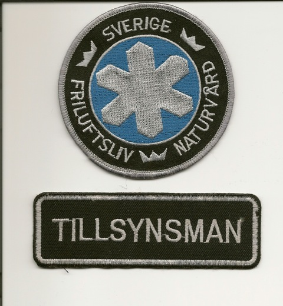
Kronans naturvårdsmärke den s.k. ”snöflingan” samt funktionsbeteckning. Foto: Ronny Fredriksson
På fritiden sysslar jag gärna med friluftsliv, naturskydd, politik/samhällsdebatt, umgås med goda vänner, familj/släkt, en god bok eller att gå på biografen. Är i grund och botten ganska mycket av föreningsmänniska även om tiden med mitt nuvarande yrke inte finns. Men är idag ändå passiv medlem i Vaxholms Fästnings Musei Vänner, Friluftsfrämjandet, Naturskyddsföreningen, Upplands Ornitologiska Förening, Svenska Rovdjursföreningen, Dannemora Hembygdsförening, Vaxholms Socialdemokratiska Arbetarekommun/förening, Transports Socialdemokratiska förening, Fackföreningen Unionen, Finnsjön med flera sjöars FVO……
Kameror....ja det är alltifrån min iPhone 6 plus till en Canon 7D jag använder när jag är ute och rör mig i markerna.
Bästa fågelboken tycker jag ännu är Erik Rosenbergs ”Fåglar i Sverige” från 1953, illustrerad av Harald Wiberg....jag har den 5:e omarbetade upplagan tryckt 1979 som är uppdaterad av Carl-Fredrik Lundevall, som jag förövrigt träffat en gång.
Jag är lite engagerad politiskt......är ordinarie ledamot i Vaxholms stadsbyggnadsnämnd och ersättare i fullmäktige.
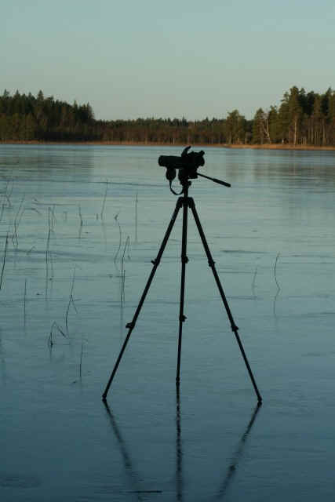
Kan det bli vackrare att skåda fågel? Blankis en solig dag på Vikasjön. Foto: Ronny Fredriksson
Mitt intresse och engagemang för området Florarna väcktes redan som barn….eller snarare kom det naturligt med släktens närhet till området. Mormor Vera och morfar Åke boende i Dannemora. Farmor Märta och farfar Fritz boende i Tobo/Tegelsmora trakten samt övrig släkt i området.
Som barn var det tradition med bär- och svamplockning i Florarna och omgivande marker. Hjortronplockningen var ett av årets händelser, nästan som kräft- och surströmmings middagarna….Fredrikssons plockade hjortron på Tegelsmora Stormosse och Hagels kring Stormon/Mörkmossen samt Agnsjöarna.
Sedan jag började släktforska för några år sedan kan jag konstatera att släkten verkar i och runt Florarna under många generationer….ivartfall tillbaks till början av 1700-talet. Vår släkt har haft boplatser vid Åkerbysjöns södra strand, Hagelstorp i Gustavsbo, Vi har bott i Kalvsbo och platsen kallas Hagelstomten och vi har bott i torpet Boda nära Ursbo. Min mormors syster var bondmora i Karkebo. Min mormors föräldrar Josef och Anna har bott på Risön och i Bryttbyn. Det på min mammas sida. På min pappas sida har vi bott i Norrtorpen genom soldatsläkten Kvist.
Min mammas farbror, Holger Hagel, var under flera decennier naturreservatet Florarnas tillsynsman först under Domänverket och sedan Länsstyrelsen.
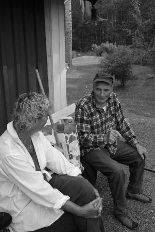
Mamma Britt-Marie med sin farbror Holger. Vid Dammstugan, Ursbo. Foto: Ronny Fredriksson
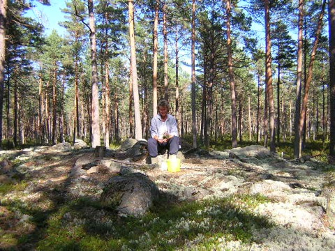
Min mamma, Britt-Marie Fredriksson, på en liten fastmarksholme i Mörkmossen den 17 augusti 2003. Foto: Ronny Fredriksson
Med andra ord kan vi i vår familj säga att vi har anknytning…..
Vill ni nå mig går det bra på min mobiltelefon 070 - 564 32 40 eller via kontakta mig länken längst ner på denna sida.
Notera att jag är en privatperson med intresse för Florarna. Vill ni ställa frågor om naturreservatets förvaltning, skötsel eller tillsyn skall ni vända Er till Länsstyrelsen på telefon 010 - 22 33 228 alternativt 010 - 22 33 000.
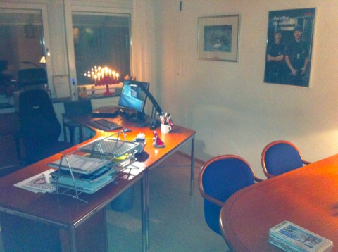
Mitt arbetsrum på Lindhagensplan 70 i Stockholm.
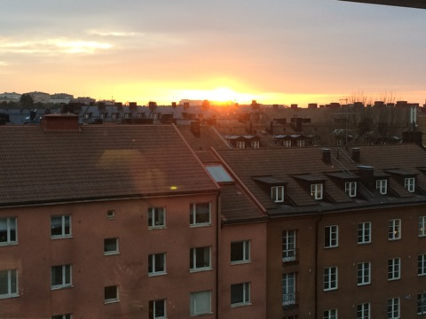
Utsikten över takåsarna på Kungsholmen från mitt arbetsfönster.
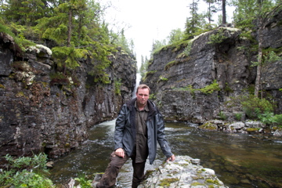
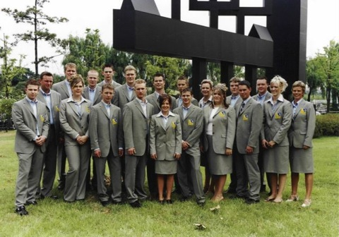
2001 var jag lagledare för det Svenska Yrkeslandslaget vid deltagandet i Youth Skills Competition i Sydkorea. Kul upplevelse. Från vänster är jag tvåa.
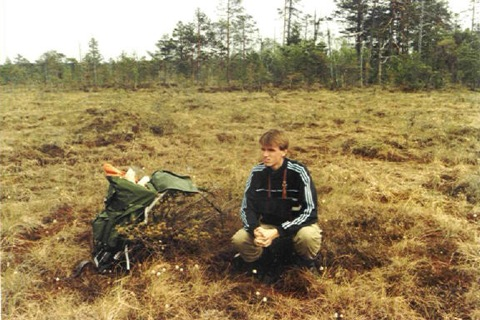
Jag på Hillebolamossen för många år sedan.
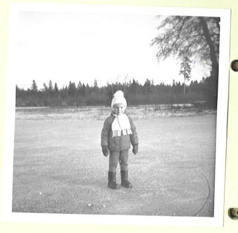
En ung Ronny på isen vid Karmdammen, Dannemora.
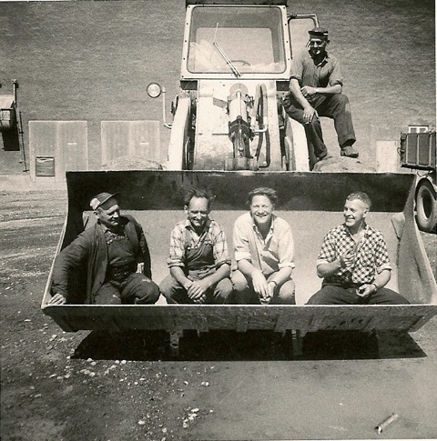
Morfar Åke med arbetskamrater i skopan vid Dannemora gruvor.
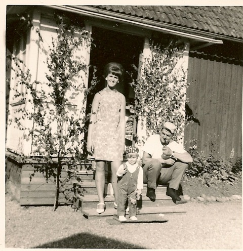
Mamma Britt-Marie, jag och morfar Åke vid Konstholmen, Dannemora
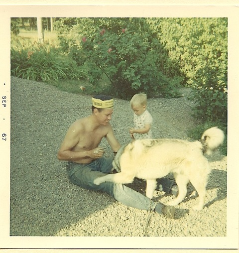
Pappa Åke, hunden Sappo och jag vid Broddby, Tobo i september 1967.
Nedan ses lite bilder från ”min tidigare gata i stan” samt från ön där jag bor nuförtiden: